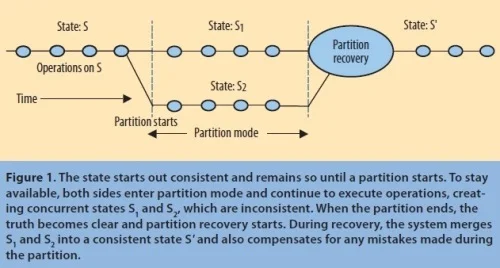
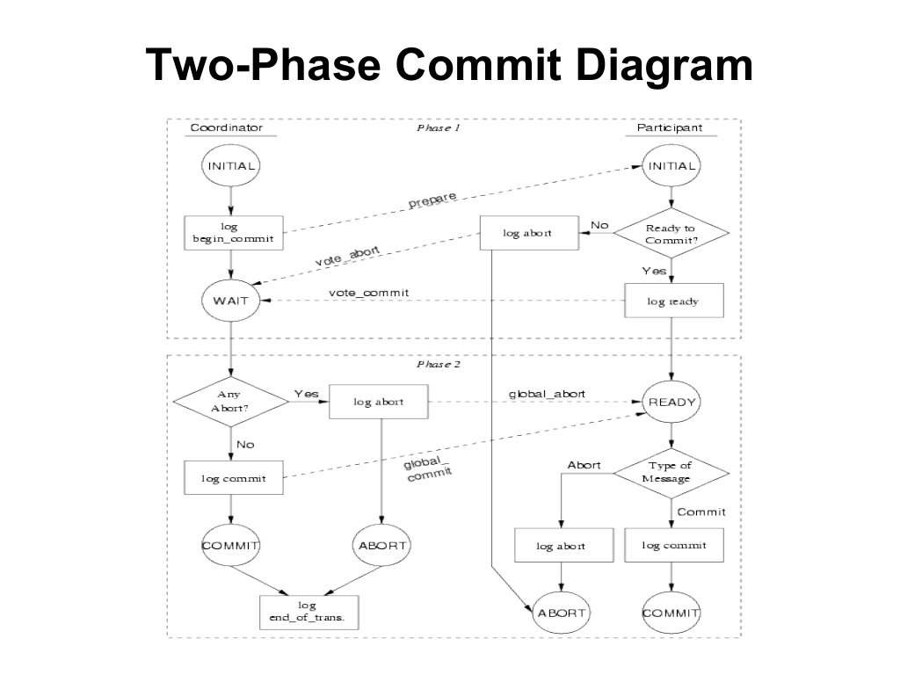
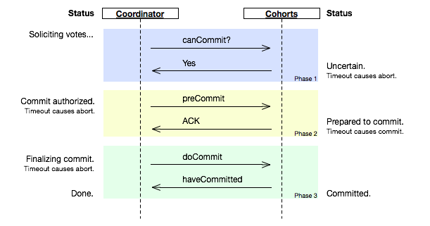
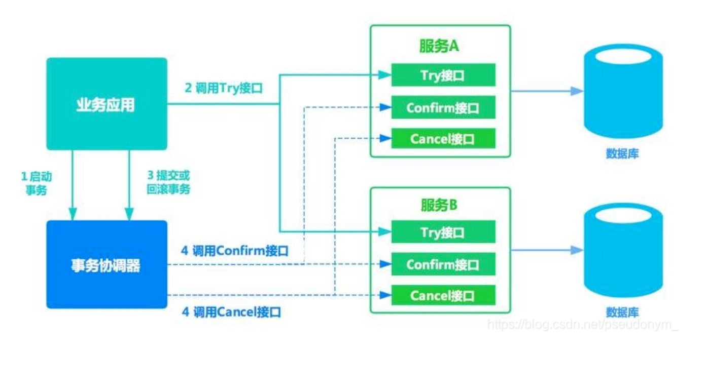
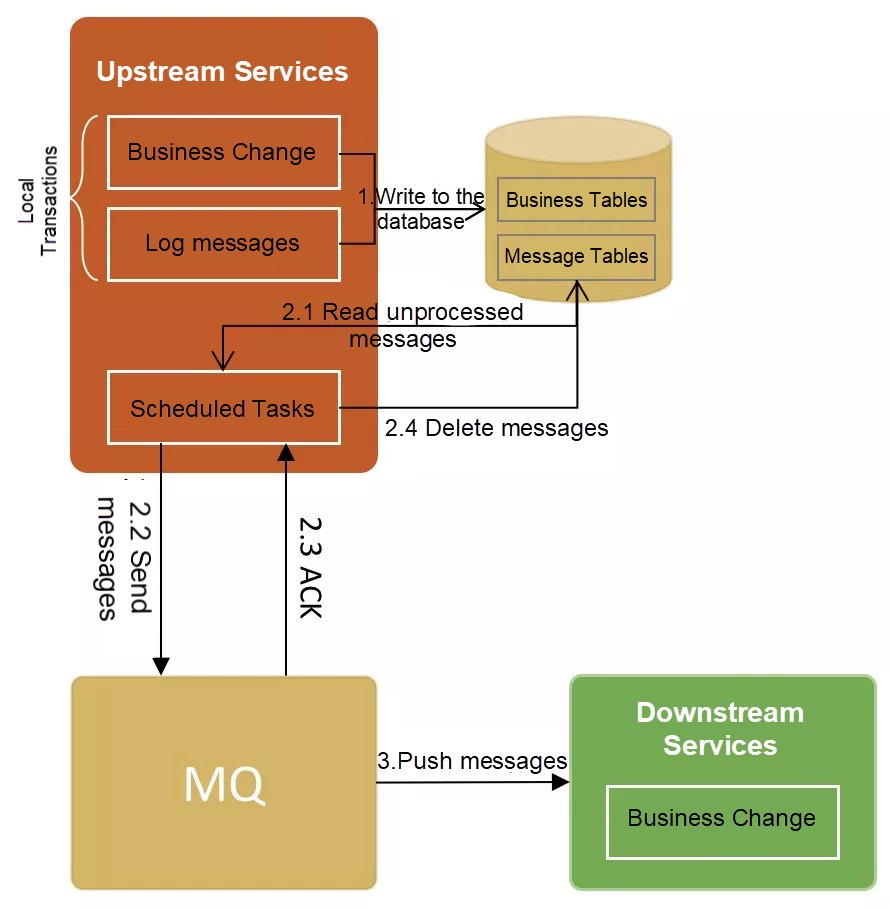

分布式事务
问题定义
对经典的电商场景而言：下单是个插入操作，扣减金额和库存是个更新操作，操作的模型不同，如果进行分布式的服务拆分，则可能无法在一个本地事务里操作几个模型，涉及跨库事务。
CAP 定义
根据 Eric Brewer 提出的 CAP 理论：
- Consistency：All Nodes see the same data at the same time。所有节点看到同一份最新数据（线性一致性）。
- Availability：Reads and writes always succeed。非故障节点必须在合理时间内响应。
- Partition tolerance：System continues to operate despite arbitrary message loss or failure of part of the system。网络分区时系统继续运行。
由此诞生三种设计约束和取舍方向：
- CA：放弃P，仅适用于单点系统，非分布式，如 MySQL主从同步。
- AP：放弃强一致性，保证高可用。Cassandra，DynamoDB。Gossip协议可实现最终一致性。
- CP：放弃可用性，保证强一致性与分区容错。ZooKeeper (ZAB)，etcd (Raft) 。2PC，2PC 无法保证吞吐；Paxos可优化吞吐（如Multi-Paxos）。
在分布式场景下，网络分区不可避免。网络分区带来一个不可解决的基本问题：执行本地事务的一个节点，无法确知其他节点的事务执行状况。
- 在CP系统中：节点会阻塞操作（如Raft的Leader选举），直到确认多数节点状态，可以确知集群状态。
- 在AP系统中：节点继续响应请求但不保证数据一致性，（如Gossip传播延迟）。
常见误解
《【论文笔记】CAP Twelve Years Later: How the “Rules” Have Changed》
三选二系统的涌现
“三选二”的说法由于过分简化了各个特性间的关系而常常导致误解，而这，现在看来还是挺要紧的。CAP仅仅只封闭了一小片设计空间：在分区情况下完美的可用性和一致性。可是这种情况并不常见。
同时丢失所有特性
现代CAP的目标应该是在特定应用中最大化一致性和可用性的组合收益。
某种程度来说，NoSQL的就是要提供一种方案，可用性第一， 一致性第二。而坚持ACID特性（原子性、一致性、隔离性、持久性）的数据库恰恰相反。
“三选二”的观点在多个方面是有误导性的。首先，由于网络分区很罕见，所以当系统没有发生分区的时候很难让人放弃C或A。其次，在同一个系统的不同颗粒度上，C和A之间的选择会发生很多次，不仅子系统会有不同的选择，甚至有可能随着系统运行、特定数据或者用户介入而改变。最后，三个数据是连续的，而非离散的，不是非黑即白的。可用性很显然是在0到100的百分比区间内连续的。一致性明显也有很多档次。甚至分区也有很多细节，有些时候大家对于分区是否存在仍有不同意见。
探索这些细节的过程中，也迫使我们不断优化传统的应对网络分区的方法，这也是最核心的挑战。由于网络分区很少出现，CAP理论可以在绝大部分时间里允许有完美的C和A；可是一旦分区发生，就需要有一个策略来检测并应对网络分区。这个策略应该有三个步骤：
- 检测分区
- 进入显式的分区状态并限制部分操作
- 启动一个过程来恢复一致性并补偿分区期间的错误。
在经典的诠释中，CAP理论不看延迟，虽然在实践中延迟和分区是深度关联的。运作上讲，CAP的本质体现在系统超时之际，这时系统必须做出根本判断一一分区判断：
取消操作，因此降低了可用性， 或者
遂行操作，因此承担了不一致的风险。
通过重试通信来达到一致性，比如通过Paxos或者两阶段提交，仅仅是推迟了上述过程。总有某个时间点，程序必须做出判断；而无穷的重试本质上是选择C，放弃A。因此从实际上看，分区是通信过程中的一个时间限制。在时间限制内没有达成一致就意味着分区，以及为当前操作在C和A之间做出选择。这些概念捕获到了和延迟相关的核心设计问题：两边是不是在没有通信的情况下向前推进？
这个从实际出发的观点带出了几个重要的结果。首先，分区并不是一个全局的概念，因为有的节点可能检测到了分区，而其它的节点没有。第二，节点检测到分区之后进入了分区模式一一介于优化C和A中间的部分。
有时候为了在广域网络上避免因维护一致性而造成的高延迟，放弃强一致性也是合理的。雅虎的PNUTS系统因为异步维护远端的副本而带来了不一致性。不过，由于它把主副本放在本地，反而降低了延迟。这个策略在实际中运作还不错，根据用户的位置不同，单个用户的数据天然就是分区的。理想情况下，每个用户的主数据都应该在其附近。
脸书使用了相反的策略。主副本永远在同一个地方，远端的用户一般会有一个更近，但是略有延迟的副本。然而，当用户更新其页面时，更新的内容直接走到主副本中，以便其他用户可以在短期内读到数据，尽管这样有些延迟。20秒之后，用户的流量切回附近的副本，那会儿更新的内容也同步过来了。
通常是先 C 后 A，即在超时以前，不让系统恢复响应-这也是我们一般系统会做的事情。
只要在业务允许的最大响应时间内，无法让“大多数”相关节点完成一次往返通信，系统就视为“分区”；
管理分区

哪些操作可以继续？
哪些操作需要被限制？取决于系统需要保持怎样的不变性。给定一组不变性约束，系统设计师必须决定是在分区的时候保持某个特定的不变性，还是冒险打破它并寄希望在分区恢复时重建它。举一个不变性的例子，某个键在表中的唯一性，设计者一般会选择冒险，允许在分区期间存在重复的键。重复的键在恢复阶段很容易探查到，假设它们可以合并，设计者边能轻易地重建此不变性。
然而对于一些在分区时候也需要保持的不变性，设计者必须禁止或者修改那些可能影响它的操作。（总的来说，没有办法来判断某个操作是否会破坏不变性，因为此刻分区的另一侧是不可知的）外部化的事件，比如从信用卡扣钱，通常就是这么处理的。在这种情况下，策略是记录意图，并在分区恢复后执行。这种事务通常是某个大的工作流的一部分，有明确的订单处理状态，将操作推迟到分区结束也没有特别大的坏处。设计者牺牲了一部分A，但是用户感受不到。用户只知道他们下了单，系统稍后会处理。
一般来说，分区模式给用户界面带来了一个本质上的挑战，告诉他们任务正在进行中，而没有完成。研究者对离线操作，也就是长时间分区的情况进行了探索。比如Bayou的日历程序，用不同的颜色展示潜在的不一致（尚未确定的）条目。这种告知机制在工作流应用，比如带有邮件通知的商务系统，或者带有离线模式的云服务，比如谷歌文档中，都比较常见。
之所以要关注显式的原子操作，而不仅仅局限于读和写，是因为这样更便于我们分析高层操作对于不变性的影响。尤其是，设计者需要做一个交叉表，针对所有的操作和所有的不变性，来分析每个操作对每个不变性是否有影响。如果是，设计者必须绝对是否要禁止、推迟或者修改此操作。在实践中，这些决定可以建立在已知的状态、依据或者两者同时之上。比如一个系统中，某种数据有其对应的主节点，那么操作就只能在主节点上，而不能在其它节点上进行。
在分区两侧追踪操作历史最好的办法是使用版本向量（version vectors），它可以捕获操作中的因果依赖。向量的元素是一个数据对（节点、逻辑时间），针对某个对象，所有更新它的节点，每个节点一条记录，记录那些更新了的节点以及更新时间。假设此对象有两个版本，A和B，A比B更新，意味着对于的节点，A的时间要大于或等于B的时间，而且至少有一个节点上，A的时间是大于B的时间的。
如果无法对向量进行排序，则说明这些更新是同时发生的，而且很有可能已经不一致了。因此，对于分区两次的版本向量，系统可以轻易区分哪些操作已经是有序的，哪些是同时执行的。最近的研究证明了这类因果一致性是设计者在聚焦可用性时最好的方案。
分区恢复
在某个时间点，通信回复，分区结束。在分区的时候，每一侧都是可用的，都在执行命令，但是分区状态推迟了一部分操作，也打破了一些不变性。在这个时候，系统知道分区两侧的状态和历史，因为在分区状态下，它们都记录了详细的日志。历史比状态更管用，因为系统可以从中推导出哪些操作实际打破了不变性，什么操作是外化的，包括发送响应给用户。设计者必须在恢复阶段解决下面两个难题：
两侧的状态必须重新归于一致
必须为分区模式下造成的错误进行补偿
通常来说，可以从分区的时刻开始以某种形式回放两侧的操作，依此来取得一致的状态，这是比较容易的。 Bayou就是这么做的。它显式地将数据库回滚到合适的时间，以合理的确定性的顺序回放所有操作，使得所有节点达成相同的状态。与此类似，源代码控制系统，比如CVS从某个共有的一致状态开始，向前执行更新，来合并分支。
但大部分系统并不总是能合并冲突。比如，CVS偶尔有些冲突需要用户手动解决。带有离线模式的wiki系统将冲突的内容留在结果文档中，让人手动编辑。
与之相反，有的系统总是可以通过选择特定的操作来合并冲突。有一个例子是谷歌文档中的文字编辑。它限制了了一些操作，比如加载样式、增加或删除文字。由此，虽然通常而言的结果冲突问题并没有解决，但是在实践中，设计者可以选择在分区阶段限制某些操作的使用来达到恢复阶段自动合并的效果。推迟有风险的操作是这种策略的比较容易的实现方式。
使用沟通性的操作是最接近状态自动收敛的方法。系统合并日志文件，进行排序，并执行它们。沟通性意味着一种重排操作使之达到一种全局一致的有序状态的能力。不幸的是，使用沟通性操作远比它看起来困难。比如加法是沟通性的，但是带有上下界检查的加法就不是了（比如余额为0）。
设计者可以在分区阶段选择限制部分操作的使用，以便系统可以在恢复阶段自动合并状态。
Marc Shapiro及其在INRIA最近的工作显著地改善了沟通性操作在状态收敛方面的使用。这个团队开发出了CRDTs（沟通性复制数据类型），一种被证明在系统分区之后还能收敛的数据结构，并描述了如何使用这些结构来
- 确保分区阶段所有的操作都是沟通性的
- 基于网格来表示值，保证分区阶段所有的操作都是相对网格单调递增的。
后面的方法通过取得分区两侧的最大值来收敛状态。这是对亚马逊处理购物车的方法的形式化表示和改进：在分区之后，收敛值是两个购物车的并集，而并集是一个单调操作。这个方法的后果是已经删除的物品有可能重新出现。
然而，CRDTs还可以实现分区容忍的集合，两侧都可以增删内容。这种方法的本质是维护两个集合：一个维护增加的内容，一个维护删除的内容，区别在于集合的从属关系。每个简化的集合收敛，而上述区别也一样。在某个时间点，系统可以通过从两个集合中移除已删除的内容来清理集合。然而这种简单的清理只有在系统为分区的时候才是可能的。换句话说，系统设计者必须在分区的时候推迟或者禁止某些操作，但是这些只是不影响可用性的清理操作。所以通过CRDTs来实现状态，设计者可以选择可用性，并保证分区之后状态自动收敛。
错误补偿
除了计算分区消除以后的状态，还有一个更难的问题，也就是补偿在分区阶段造成的错误。通过跟踪和限制分区模式下的操作，我们掌握了哪些不变性被打破了，因而也让设计者可以为每个不变性创建一个恢复策略。一般来说，系统在恢复阶段发现问题，也是在这个阶段进行修正。
有许多方法可以来修正不变性，包括改动较小的方式，比如“以最后的写入为准”（忽略了部分更新）；更智能的方式，将操作合并；以及上报人工操作。后者的一个例子便是机票的超售：登机过程某种程度上就是一种分区恢复，其不变性在于机上的座位至少要和乘客一样多。如果乘客太多，那么必然有人没位子，理想情况下客服应该补偿这部分乘客。
机票超售的例子还展示了一种外部性错误：如果航空公司没有承诺乘客一定有位子，那么问题解决起来就更简单了。这也是为什么要推迟有风险的操作：在恢复的时候才知道真相。弥补这些错误的核心便是补偿。设计者必须创建补偿操作，既能恢复不变性，又能够纠正外部化的错误。
ATM机上的补偿问题
在ATM（自动柜员机）的设计中，强一致性看起来是最符合逻辑的选择，但是在实际中，A胜过C。理由很直白：更高的可用性意味着更高的回报。因此，ATM机的设计是一个很好的案例，在分区打破不变性时，回顾补偿中的种种挑战。
ATM机的基本操作包括存款、取款和查询余额。其关键的不变性约束在于余额必须大于等于零。因为只有取款才能打破不变性，所以它需要特殊处理，而其它两者则总是可以执行。
ATM系统的设计者可以选择在分区的时候禁止取款，因为在此时刻不可能知道真正的账户余额，但是这也会削弱可用性。取而代之，通过替身模式（分区模式），现代ATM机限制了净取款额为k，k可以是200美元。在这个限制以下，取款操作顺利进行；当超过这个限额，系统拒绝取款。由此，ATM机在可用性方面选择了一种复杂的限制，既允许取款，又限制了风险。
当分区状态结束，必须要有一些办法来恢复一致性，并为系统在分区阶段造成的错误进行补偿。恢复状态是简单的，因为所有的操作都是沟通性的，但是错误补偿就有好几种形式了。如果最终账户余额小于零，则破坏了系统的不变性。通常情况下，ATM机就不要这笔钱了，让问题外部化。银行通过收手续费以及期待客户还钱来进行补偿。考虑到风险是有限的，问题也不是很严重。然而，假定在分区期间，账户的余额已经在零以下（ATM机不知道），但是后续的一笔存款将余额拉了上来。在这种情况下，银行可能仍然会追溯收取一笔透支手续费，或者忽略这个问题，因为客户已经支付了足额的款项。
总的来说，由于通信的延迟，银行系统并不依靠一致性来获取正确性，而是基于审计和补偿。另一个例子是支票风筝（checkkiting），意思是客户从多个支行取走现金，在它们彼此通信之前就溜之大吉。这种透支后面会被抓到，并导致法律层面上的补偿。
技术上来说，CRDTs只允许那些可以在本地验证的不变性，这个限制让人不再需要事后补偿，但是也在某种程度上削减了这个方法的威力。然而使用CRDTs来收敛状态的解决方案可以允许暂时打破全局不变性，在分区恢复后收敛状态，再执行任何所需的补偿。
从外部化的错误中恢复需要一些外部化输出的历史。看一个酒后打电话的例子，有个人前一晚喝醉了，打了好多电话，这会儿已经记不得了。天亮之后这个人的状态可能不错，但是日志显示了一连串的电话，其中有一部分是错的。这些电话就是这个人的状态（醉酒）的外部化。由于此人不记得打了哪些电话，所以后面要弥补这些错误的话就很困难了。
在机器的上下文中，电脑可能在分区的时候下了两个定单。如果系统可以区分出确实要下两单，还是两单下重复了，那么就可以取消重复的一单。如果外部化了，一种可能的补偿是自动生成一封邮件给客户，解释系统意外下了两单，现在问题已经恢复，并附上优惠券一张，下次下单时候可以打折。如果没有足够的历史记录，捕获错误的任务就落在客户头上了。
有的研究者正式探索过，使用补偿事务来处理长时间事务。长时间的事务面临多种分区时的选择：通过长时间持有锁来保证一致性呢？还是早点释放，将未提交的数据暴露给其它事务来换取更高的并发性呢？一个典型的例子是在单个事务中更新所有员工的记录。通常的序列化执行事务会锁上所有的记录，不允许并发。补偿事务则用了另一种方式，将大的事务分成一段段子事务，每个事务依次提交。当需要终止事务的时候，系统必须回滚所有已经提交的子事务，这就需要开启一个新事务来纠正前面的影响，也就是补偿事务。
通常来说，目标就是避免终止其它已经用了那些错误提交数据的事务（不要级联终止）。这个方案的正确性不依赖于序列化或者隔离性，而是事务序列对状态和输出的净影响。换句话说，在补偿之后，数据库是否处于一种状态，这个状态等价于哪些子事务从未执行过。这个等价性必须包含外部化操作，比如对重复支付进行退款，和一开始就没对客户收款，是不一样的，但是也可以有争议地认为是一致的。同样的想法在分区恢复的时候也是一样。服务或者产品的供应商并不总能直接回滚错误，但是他们的目标是承认错误，并采取新的补偿措施。如何最好地将这个理念用于分区恢复，是一个开放性的问题。前面“ATM机上的补偿问题”一文描述了在某一个应用领域中的关注点。
结语
当分区发生时，系统设计者不应该盲目地牺牲一致性或可用性。使用前面提出的方案，设计者可以通过仔细管理分区期间的不变性，同时优化A和C。对于更新的技术，比如版本向量和CRDTs，通过框架来简化使用，可以让这类技术得到更广泛的传播。不过，不像ACID事务，这个方法相比传统策略需要更细致的部署。最优的策略重度依赖于服务的不变性和操作的细节。
CAP 工程流程速查表
CAP 不是宗教，而是工程流程：
先给超时 → 进分区模式 → 限制+记账 → 用 CRDT/版本向量收敛 → 最后补偿错误
把“三选二”变成“分区时最大化可用，恢复时最大化一致”。
1. 把“分区”当成限时通信问题，而非断网
- 给每一次写操作设 业务超时（SLA）
- 超时前凑不够多数派 → 立即进入分区模式
- 超时未到 → 继续重试，不急着二选一
2. 进入分区模式后，显式限制操作（而非直接降维）
| 步骤 | 动作 |
|---|---|
| 梳理 | 拉出“操作 × 不变性”交叉表 |
| 限制 | 推迟 / 限额 / 记录意图 |
| 记账 | 外部化操作（扣款、下单、发邮件）必须先记日志，留待恢复阶段补偿 |
3. 分区期间两侧都跑原子操作，但不跑全局事务
- 单侧仍用 本地 ACID 事务，保证可回滚
- 放弃跨区锁、跨区可串行化——锁不住，也等不起
4. 用版本向量或 CRDT 记录因果，让状态自动收敛
| 工具 | 作用 |
|---|---|
| 版本向量 | 判断哪些更新并发，哪些有序 |
| CRDT | 并发更新数学可合并，恢复阶段无需人工冲突解决 |
| 目标 | 恢复时只需“取最大值 / 并集”即可得到一致状态 |
5. 恢复阶段两步走：先合并状态，再补偿错误
① 合并状态
- 回滚到分区快照 → 按因果顺序重放操作 → 得到全局一致 S′
- 或直接用 CRDT 收敛函数一次性算出 S′
② 补偿错误
- 对已外部化的结果（多扣款、超售、重复邮件）发起反向业务动作
- 补偿本身也是事务，必须可重试、可审计、对用户可见（退款、优惠券、致歉信）
一句话带走
CAP 不是非黑即白，而是“超时+限制+记账+收敛+补偿”的五步曲。
按流程落地，就能在分区时尽量保持可用，恢复时尽量还原一致，避免拍脑袋砍功能。
BASE 定义
强一致性（零窗口；实现：共识算法 + 复制状态机 / 2PC）
任一更新一旦成功返回客户端，后续所有读操作（无论从哪个副本）立即拿到最新值；系统内不存在中间状态可被外界观察。
例子：用户下单后，任意节点查询库存、余额、积分，全部是已扣减后的最新值。
弱一致性（无限窗口）
写成功后，不承诺何时、甚至是否能读到最新值；中间状态可能被看到，也可能看不到。
例子：刚发的微博，自己刷新有时可见、有时不可见；不同好友看到的时间点不同。
最终一致性（有限窗口；liveness + safety）
弱一致性的特例，系统保证在有限且确定的时间内把所有副本收敛到同一最新值（liveness），且一旦收敛不再回退（safety）。
例子：DNS 修改、Amazon 购物车、Cassandra 读写级别 ONE → ALL 的收敛过程。
CAP 定理的证明思路
Gilbert 和 Lynch 在 2002 年的论文中给出了 CAP 猜想的形式化证明，其核心逻辑如下：
- 假设系统同时满足 C、A、P 三个特性
- 构造网络分区场景：将系统分为两个部分 G1 和 G2，它们之间无法通信
- 执行写操作：客户端向 G1 发送写请求，修改某个变量的值
- 执行读操作：另一个客户端向 G2 发送读请求
- 推导矛盾：
- 由于分区存在（P），G1 无法将写操作的结果同步到 G2
- 由于可用性（A），G2 必须响应读请求
- 由于一致性（C），G2 必须返回最新的值
- 但 G2 没有收到写操作的结果，无法返回最新值
- 因此产生了矛盾
结论：在网络分区必然发生的分布式环境中，系统只能在一致性和可用性之间做出选择，无法同时满足三者。
一致性模型光谱
一致性不是非黑即白的，而是一个连续的光谱，从强到弱有多种不同级别的一致性模型：
强一致性（Strong Consistency）
- 定义：任何读操作都能读到最近一次写操作的结果
- 特点：所有客户端同时看到相同的数据
- 代价：高延迟、低可用性
- 典型系统：ZooKeeper、etcd
顺序一致性（Sequential Consistency）
- 定义：所有客户端看到的操作顺序是一致的，但不一定是实时顺序
- 特点：全局有序，但不保证实时性
- 代价：性能开销较大
- 典型系统：某些内存模型
因果一致性（Causal Consistency）
- 定义：有因果关系的操作保持顺序，无因果关系的操作可以乱序
- 特点：保证因果关系的顺序，允许一定程度的并发
- 代价：性能较好
- 典型系统：某些分布式缓存
最终一致性（Eventual Consistency）
- 定义：如果没有新的更新，最终所有副本会达到一致
- 特点：高可用性、低延迟，但可能有短期不一致
- 代价：需要处理不一致的情况
- 典型系统：Cassandra、DynamoDB
一致性模型对比：
1 | |
事务模型
2PC
当代的 2PC 有两种实现方案：经典的 XA 事务（经典 2PC 在数据库里叫 XA 协议（JTA/JDBC 的 XAResource）），谷歌的 Percolator。
XA 事务简述
对于经典的 XA 事务，⼆阶段提交协议，即将事务的提交过程分为两个阶段来进⾏处理：准备阶段和提交阶段。事务的发起者称协调者（coordinator），事务的执⾏者称参与者（participant）。当⼀个事务跨多个节点时，为了了保持事务的原⼦子性与⼀致性，需要引⼊入⼀个协调者（Coordinator）来统⼀掌控所有参与者的操作结果，并指示它们是否要把操作结果进⾏真正的提交或者回滚。
2PC 的 Failover
Safety：不会出现一个 participant 提交一个 participant 回滚的情况，即无矛盾态。
Liveness：最终一个分布式事务处于全局提交或者回滚的状态，即无悬垂态（2PC 中的阻塞操作可能引发异常等待）。
一个典型的 2PC 的例子
一个 TC 的主要操作有： 对 participant prepare、对 participant confirm、对 participant abort/cancel。
一个 participant 的主要操作有：返回 ok，返回 not ok，返回 commit 成功，返回 commit 失败，返回 abort/cancel 成功，返回 abort/cancel 失败。

节点超时和宕机会严重降低系统的整体吞吐量。节点中要不断引入重试才能度过各种各样的宕机的困难。
如果没有重试和超时，则任一 participant 节点失灵，都可能导致已经做了 pre-commit 的其他 participant 永久 hang 住（阻塞单点），因为 coordinator 会收集不到足够的签名（vote/ballot）而 hang 住。
而如果 coordinator hang 住，结果会更糟，因为再起一个 coordinator 也无法让 hang 住的节点真正提交或者回滚。
这两种情况都是死锁，只有超时检测 + cancel 操作能解决这个问题（见下方的 TCC）。
中心化和去中心化的 2PC
如果存在一个没有业务逻辑的 coordinator，则这种 2PC 是中心化的；如果某个 participant 自己带有
coordinator 的职能，则这种 2PC 可以认为是近于去中心化的。
把 coordinator 的代码“塞”进某个 participant 进程里，决策权仍然唯一，崩溃后其他节点依旧无法自决，本质上还是单点；只是“物理部署”上的同进程，并未解决 2PC 的中心化故障域问题。真正的“去中心化 2PC”需要共识协议（Paxos/Raft）选出新 coordinator，让多数节点能共同决定提交或回滚，否则仍属于中心化 2PC的变种。
总结
2PC 简单易懂、能保证原子性，但同步阻塞 + 单点故障 + 低吞吐决定它只适用于 低频跨库事务（如订单-支付核心链路）或 内部 XA 场景；
高并发长链路业务请改用 TCC / Saga / 本地消息表 等柔性方案，或直接用 Paxos/Raft 共识协议替代 coordinator。
3PC

这幅图的出处在这里。
三个阶段：CanCommit -> preCommit -> doCommit
第一阶段CanCommit ≈ 可行性预检（无锁）
第二阶段PreCommit ≈ 真正加锁 + 写日志。
第三阶段协调者指示手动提交。
3PC 完整时序与超时行为
-
CanCommit（阶段 1）
- 协调者询问所有参与者 “能否提交？”
- 参与者仅做语法/权限/容量检查，不申请锁、不预扣资源、不写日志
- 超时：任一节点无响应 → 协调者直接 abort
- 作用：提前过滤失败请求，减少后续锁占用时间，并不能解决网络分区或协调者宕机导致的不一致
-
PreCommit（阶段 2）
- 协调者收到 全局 Yes 后，广播 preCommit
- 参与者动作：
- 申请本地排他锁（预扣资源）
- 写 undo/redo 日志 并刷盘
- 向协调者回复 ACK
- 超时行为：
- 协调者侧超时（未收齐 ACK）→ 发送 abort
- 参与者侧超时（迟迟等不到 preCommit 或 abort）→ 仍保持阻塞，不会自提交；只有收到 preCommit ACK 且 阶段 3 报文全丢失时才进入下一条规则
-
DoCommit（阶段 3）
- 协调者收齐阶段 2 ACK 后，广播 doCommit
- 参与者收到即：释放锁、刷盘、返回成功
- 超时行为：
- 协调者超时 → 重试或向上层报错，已发 doCommit 视为成功
- 参与者超时（等不到 doCommit/abort）→ 自提交（关键！）
前提：它在阶段 2 已成功 ACK preCommit，即全局 Yes 已确立，因此才敢“姑且走下去”
总结：
- 加锁 + 预扣资源 + 写日志仅发生在 PreCommit
- 自提交仅出现在 阶段 3 参与者超时且已 ACK preCommit的场景
- 阶段 1、2、3 都给协调者设超时；阶段 3 给参与者再设一次超时，用以缓解（而非根除）2PC 的无限阻塞
- 前提一旦被打破（全局 Yes 不成立或 PreCommit 广播失败），自提交就可能导致部分提交 / 部分回滚——3PC 只是降低死锁概率，并未消除不一致风险
TCC

TCC 分布式事务详解
角色
- 业务应用：事务发起方，负责调用 Try / Confirm / Cancel
- 事务协调器（可内嵌或独立）：记录事务状态，按结果调度 Confirm / Cancel
- 参与服务（库存、钱包等）：提供对应 TCC 接口，真正的资源在其本地
协调器调用模式的灵活性
TCC 规范只定义三个语义接口和幂等补偿原则，不强制要求调用权归属：
-
内嵌协调器模式：
- 业务进程自己记录事务状态
- 发起方直接调用 Try → Confirm/Cancel
- 无额外协调器进程（如 Seata 的 @LocalTCC、ByteTCC）
-
独立协调器模式：
- 发起方只调用 Try，提交事务 ID 给独立 coordinator
- Coordinator 负责后续批量/定时调用 Confirm/Cancel
- 适合多服务、长链路场景
-
混合驱动模式：
- Try 由发起方同步调用
- Confirm/Cancel 可通过本地定时任务、消息队列或 server 回调触发
- 只需保证至少一次调用 + 接口幂等性
参与者接口要求
每个参与服务必须实现三个幂等接口：
1 | |
三阶段语义
1. Try（阶段 1 → 业务层 “prepare”）
- 做一致性校验（库存是否足、余额是否够）
- 预扣资源（冻结库存、冻结金额）→ 本地锁 + 业务状态机，不写最终业务数据
- 返回结果给协调器；失败立即触发全局 Cancel
2. Confirm（阶段 2 → 提交）
- 不再做业务检查，只把 Try 的预留资源转正（冻结→实扣）
- 幂等实现：重复调用结果相同
- 成功即释放本地锁，事务对外可见
3. Cancel（阶段 2 → 回滚）
- 释放 Try 预留的资源（冻结归还）
- 同样需幂等；可多次重试直到确认归还完成
- 业务数据保持无变更或补偿后等价无影响
与 2PC 的关系
- 阶段映射：Try ≈ 2PC Prepare，Confirm/Cancel ≈ 2PC Commit/Rollback
- 核心区别：
- 锁粒度从数据库页/行上升到业务资源
- 回滚动作由业务补偿（Cancel）代替数据库回滚段
- 效果：锁时间缩短到 Try 阶段，支持跨数据库、跨微服务、跨存储的混合事务
核心设计原则
- 接口规范：只约束三个语义接口（Try/Confirm/Cancel）+ 幂等补偿
- 调用权解耦：
- 业务方可同时担任发起方和协调器
- 也可将驱动责任移交独立 coordinator/MQ/定时任务
- 实现选择：根据团队运维能力选择部署模式（内嵌/独立/混合）
事务流程
发起方先调 Try 冻结资源 → 协调器收齐成功响应后触发 Confirm 转正；任一服务 Try 失败或超时即触发 Cancel 释放冻结。全程通过业务补偿实现回滚，不依赖数据库事务机制。
本地模式
其中 tcc 接口不一定要实现在被调用方，可以实现在调用方（类 RMI 模式，bingo！）

try 和 catch 的使用方法
要注意 try 的独立 try-catch 块，且 cancel 时要先检查 try 的状态。

空回滚和事务悬挂
要注意空回滚的忽略问题和事务悬挂的超时检查且释放的功能：

适用 TCC 的业务场景
- 对事务隔离性有要求的服务，Try 阶段的存在可以很好地保证 TCC 事务之间的隔离性 - 这里的隔离指的是 Try 一定要带有预扣资源的功能（而不是像 MVCC 那样的 SNAPSHOT ISOLATION）。
- 对性能有要求的服务，TCC 仅第一阶段加锁，因此性能较好。
- 改造成本小，没有历史包袱的服务-比如新服务，可以方便地抽象出 TCC 的三个阶段。
Saga 模型

假设一个分布式场景涉及三个服务，我们要有随时能够从某个失败链条上反向补偿回去，保证全局追平的能力。
这里面要考虑正反操作的请求要线性编排，严格有序。如果有必要，还是要加入类似 update where 的语义。
saga 的中心化实现
SAGA 通常有两种模型，一种是事务协调器器集中协调，由它来收集分支状态并发号施令；另⼀种是基于事件订阅的⽅式让分支之间根据“信号”进⾏交互（我们经常使用的一个服务用一个 MQ 来驱动下一个的服务来追平状态，是一种去中心化的 saga 模型）。

| 特性对比 | 协调中心模式 (Orchestration) | 事件驱动模式 (Choreography) |
|---|---|---|
| 核心思想 | 由一个中央协调器负责全局事务的调度与协调 | 无中心协调器，各服务通过发布/订阅事件进行协作 |
| 控制流 | 同步、命令式。协调器直接调用各个服务的接口 | 异步、响应式。服务间通过消息 (MQ) 传递事件来驱动 |
| 职责归属 | 协调器集中管理流程逻辑、状态和错误处理 | 流程逻辑分散在各个服务中，每个服务只知道如何响应相关事件 |
| 优点 | 流程逻辑集中，易于理解、监控和调试 | 松耦合，服务自治性高，扩展性好 |
| 缺点 | 协调器可能成为单点瓶颈，耦合性相对较高 | 流程逻辑分散，难以全局监控和调试，对设计要求高 |
| 您的描述对应 | “事务协调器集中协调，收集分支状态并发号施令” | “基于事件订阅的方式让分支之间根据‘信号’进行交互” |
saga 的两种恢复策略

从这里至少可以抽象出三种接口 compensation、reverseCompensation、needRetry。
saga 的适用场景
- 业务流程多、业务流程⻓，期间调⽤用若⼲干个分⽀支事务。
- ⽆法抽象出 TCC 的 Try 阶段（即无法预扣资源，实现隔离），但是可以很方便地实现补偿⽅法。
- 要求框架支持业务流程既能向前重试⼜可以逆序回滚的（正逆向幂等）。
- 对不不同事务间的隔离性要求不不高，可以在业务层⾯面通过代码解决的。
长事务不能容忍长期锁定，又不需要长期锁定，可以考虑 saga（现实中的分布式事务往往暗合 saga 模型）；反之则可以使用 tcc。
对比所有的基于消息的方案
graph TD
A[分布式事务模式] --> B[基础设施层]
A --> C[业务逻辑层]
B --> B1[事务消息（MQ内置协议）]
B --> B2[全局事务（Seata AT/TCC）]
C --> C1[事件驱动 SAGA]
C --> C2[本地消息表（业务自研）]我们不能把本地消息表当做事务消息的实现，只能把它当做是事务消息的某种实现的一个组件或者某种组件的一个实现。
谷歌的回答是：
No, a local message table is not inherently transactional; instead, it
is a component of the “local message” mode used in distributed
transactions as an alternative to pure transactional message systems.
The core concept of the local message mode is to group business
operations and the act of recording a “to be sent” message into the
same local transaction. If the business operation succeeds, the
message is recorded in the local table, and a separate scheduled task
handles the actual sending of the message to the message queue,
ensuring that messages are not lost and are retried if sending fails.
TCC 和 saga 的比较
| 特性 | TCC 模式 | SAGA 模式 |
|---|---|---|
| 核心思想 | “预留-确认” （业务层两阶段提交） |
“直接提交-事后补偿” （最终一致性事务链） |
| 一阶段行为 | Try：预留资源（冻结库存/金额） ▪ 本地事务提交预扣状态 ▪ 不修改最终业务数据 |
直接提交本地事务 ▪ 真实更新数据（如扣款/减库存） ▪ 业务数据立即可见 |
| 二阶段行为 | Confirm：转正预留资源（冻结→实扣） Cancel：释放预留资源（解冻） |
Compensate：执行逆向操作（如退款/加库存） ▪ 补偿必须幂等 ▪ 反向覆盖已提交状态 |
| 隔离性 | ✅ 强隔离 ▪ 隐藏中间态：冻结值对用户不可见 ▪ 业务锁：Try阶段拒绝冲突操作 ▪ 原子校验：资源充足才占用 |
❌ 弱隔离 ▪ 暴露中间态：扣减后数据立即可读 ▪ 无互斥锁：依赖数据库行锁 ▪ 时间窗风险：校验与提交分离 |
| 隔离实现机制 | 业务层资源封锁： ▪ 冻结库存 → 前端仍显示原库存 ▪ 冻结金额 → 余额查询不变 ▪ 冲突请求直接拒绝 |
无中间态保护： ▪ 扣减库存 → 前端立即显示减少 ▪ 支付扣款 → 余额实时变化 ▪ 可能读到"已扣未发"态 |
| 锁机制 | 短时业务锁： ▪ 仅在Try阶段持有 ▪ 锁定粒度=业务资源 |
无预留锁： ▪ 直接提交无锁定 ▪ 依赖数据库行锁（可能死锁） |
| 适用场景 | ▪ 高并发强隔离场景（支付/秒杀） ▪ 短流程（秒级事务） ▪ 需防脏读的业务（如钱包/库存） |
▪ 长流程事务（旅行订票/订单链） ▪ 旧系统集成（无法改造接口） ▪ 容忍中间态场景（如积分变更） |
| 实现复杂度 | 高 ▪ 需实现Try/Confirm/Cancel三接口 ▪ 处理空回滚/防悬挂 |
中 ▪ 需正向操作+补偿接口 ▪ 保证补偿幂等性 ▪ 设计事务状态追踪 |
| 改造成本 | 高：需拆分业务逻辑为三阶段 | 低：兼容现有提交逻辑，只需追加补偿 |
| 典型框架 | Seata TCC、ByteTCC | Temporal、Cadence、AWS Step Functions |
阿里的 Seata 模型衍生的数据库中间件跨库事务
首先要把物理 sql 的改写逻辑抽象化，然后在这里实现一个具体的

然后要在事务的前后加上 WAL：

然后就可以实现跨库事务了：

但跨库事务需要保证本地事务有写隔离，类似全局意向锁：

局部的意向锁实现：

seata 与 swan
| 模式 | 技术原理 | 适用场景 | 侵入性 | 框架支持 |
|---|---|---|---|---|
| AT (Auto Transaction) | - 基于 SQL 解析生成回滚日志（UNDO_LOG） - 一阶段提交，二阶段异步回滚 |
- 高并发读多写少场景（如商品查询、配置更新） - 无需业务改造 |
低（无代码侵入） | Seata ✅ Swan ✅ |
| TCC (Try-Confirm-Cancel) | - Try: 资源预留 - Confirm/Cancel: 提交/回滚 |
- 强一致性要求（如支付、库存） - 需精确控制事务边界 |
高（需实现三接口） | Seata ✅ Swan ✅ |
| SAGA | - 长事务拆分为多个本地事务 - 失败时触发逆向补偿 |
- 跨服务长流程（如订单→支付→物流） - 旧系统集成（无事务接口） |
中（需定义状态机） | Seata ✅ Swan ✅ |
| XA | - 基于数据库 XA 协议 - TM 协调全局事务 |
- 传统数据库强一致场景（如银行转账） - 兼容已有 XA 数据库 |
低（数据库驱动层） | Seata ✅ Swan ✅ |
带事务消息中间件（Kafka 的方案）-消息事务
-
Producer → Broker 段
需有 ack 机制。消息需自带唯一标识（如业务ID或序列号）。Broker 用 ack 确认，Producer 超时重试（借鉴 TCP）。
优化补充：Kafka 通过 PID（Producer ID）+ 序列号机制在存储层直接去重（无需外部数据库），实现发送侧的 Exactly-Once。 -
Broker → Consumer 段
需 Consumer 主动 commit 偏移量。核心在于 Consumer 本地事务与 commit 的原子性：- 若无法原子化（如本地事务成功但 commit 前崩溃），则需本地维护消息去重表（如
processed_msg_ids）。 - 关键设计：本地事务需原子性更新业务状态+记录消息ID，commit 失败后重试时，利用去重表拒绝重复处理。
- 若无法原子化（如本地事务成功但 commit 前崩溃），则需本地维护消息去重表（如
-
事务本质与性能
Exactly-Once 的完整实现通常需事务型数据库配合（如本地消息表模式），但得益于：- Producer-Broker 是局部事务（Kafka 事务协议）
- Consumer-业务库是另一局部事务（数据库事务）
两者通过消息解耦，性能远高于 2PC/3PC，仅牺牲部分时效性。
-
流处理的 Exactly-Once
Exactly-Once 在流处理中历来是难题：- Kafka Streams 通过内置事务实现端到端精确一次（读写原子捆绑）。
- 非 Stream 方案（如独立 Consumer）需客户端自行处理（即第 2 点机制）。
注：Flink 等框架通过分布式快照也实现了流处理精确一次，但机制不同。
基于本地事件表系统的 scan and send 机制

本质上还是把本地事务和事件在同一个事务里面写入本地数据库，然后写一个单独的服务来 scan 这个 event 表。对业务侵入性很大。
基于外部事件表系统的 prepared and send 机制

大致上就是：
- 把消息 enqueue 给broker，让消息进入 prepared 发射状态。
- 在本地事务执行完成或者失败了以后，发送 confirm 或者 cancel消息给 broker。这一步是可能失败的。
- broker 自己也定时扫描 enqueued 的 message，如果超时，按照既定配置来使用消息（通常是准备一个 fallback 接口，在接口里决定硬是发射消息或者取消发射）。如果有可能得到一个确切结果，而不是 fallback的话，就需要 broker 反查数据库表，这样又会要求数据库表至少携带事务信息-甚至是任务信息，这又让这个设计不能完全舍弃“事件表”的痕迹。
- 这其实是 broker 不提供 ack 机制的时候的一种折中。先 prepare 再 confirm，其实是一种变相的小分布式事务，主事务是本地的数据库事务，辅事务是 broker 事务，辅事务预先分配锁定资源，由主事务激发释放。
- RocketMQ 的分布式事务也是采取这种外部事件表的形式。早期是基于文件系统来实现的，后期是基于数据库来实现的。
- 这种外部事件表把侵入性放到 mq 身上。如果不像阿里之类的公司有办法自研消息中间件，则需要围绕原始的 mq 队列实现，无法改造 mq 的生命周期接口，实现各种反查逻辑，就无法实现，要回到本地事件表的方案上。
最大努力通知
最大努力通知是一种适用于跨企业或跨系统的弱一致性场景的分布式事务解决方案。
适用于跨企业/跨系统的弱一致性场景
最大努力通知通常用于企业间的系统集成，例如支付系统与银行系统的对接。由于不同企业之间的系统独立性强，无法采用强一致性的事务方案，因此采用最大努力通知的方式，通过重试和查询接口保证最终一致性。
核心机制
重试机制：通知方在发送通知后，如果未收到确认，按照一定的策略重试。重试策略可以包括指数退避、最大重试次数等。
查询接口：被通知方提供查询接口，允许通知方主动查询业务状态。如果通知方多次重试失败，可以通过查询接口确认业务状态，避免重复通知。
确认机制：被通知方在处理完通知后，向通知方发送确认。通知方收到确认后停止重试。
与其他方案的对比
最大努力通知与本地消息表、事务消息的区别在于：
- 适用场景：主要适用于跨企业、跨系统的弱一致性场景
- 一致性级别：弱一致性，容忍较长时间的不一致
- 实现复杂度：相对较低，但需要设计重试和查询机制
- 侵入性：较低，主要是接口层面的改造
我在 bridgemq 问题下的评论
以下评论是错的
~~感觉上这个问题在消息发送方的地方被做得复杂化了。
根据我个人浅薄的理解，这里 bridgemq 的存在，是把这种（事务加 MQ）的解决思路，做成了一个单独的服务，即很多人所说的外部事件表或者外部消息表。
在这个架构里面，本地事务 + bridgemq，其实就是 jta 里面的所谓的预扣资源 + 确认的模式：
- bridgemq 预扣资源。
- 本地事务预扣资源。
- 本地事务提交或失败。
- bridgemq 提交或失败。
只不过这里的设计是一个只有两个服务的小 JTA，所以事务的颗粒度更小，而 bridgemq 作为辅助事务，其生命周期完全是由本地事务这个主事务决定的，所以主事务的： - 性能更更好，2 被 bridgemq 耦合造成的改造更小。
而且这个 bridgemq 的设计，本身只解决了发送方 exactly-once 的问题，正如下面评论所说的，consumer 的 exactly-once 还是要靠业务方自己解决–实际上还是做消息的幂等要求设计或者准备本地事务去重。
实际上，Kafka 当前版本（1.0以后的版本），有了一个全局 exactly-once 的解决方案。据他们估计，可以在 Kafka Stream 里面做到 exactly-once（https://www.confluent.io/blog/exactly-once-semantics-are-possible-heres-how-apache-kafka-does-it/）。即使是在非 Stream 的场景里面，他们的 Producer API 也是支持 exactly once 的。具体地说,新版本的 Producer实际上给每个消息准备了一个序号（sequence no），producer 大部分情况下通过 ack 机制来保证 at-least-once，重复消息，就像 tcp 协议一样通过序号在 broker 这端去重（TCP 是在内存里去重的，Kafka 还支持 leader replica 在分布式场景下用文件系统去重）。这样就达到了 producer 端的 exactly-once 语义，保证了只要通信是可达的，producer 总能正确地发送消息到 broker。
那么套用到这篇文章的场景里面，这个问题就非常简单了，不需要 bridgeMQ 的帮助，只要： - 本地事务先执行成功。否则中断流程。
- 在 producer 端使用 exactly-once 语义发送消息。
发送端的事务性就达到了。
在事务里调 rpc 的铁律
- 无论如何，不依靠补偿和反查，不可能保证事务和网络 io 原子性成功或者失败。而且这两者不可偏废，要引入一个终态管理机制，调度补偿和反查。
- 尽量让所有的 rpc 分成两段，前半段在事务之前，后半段在事务之后执行，在后半段上加上补偿，是最简单的方法。
- 如果无法做到第二条，则把求锁类 rpc 放在事务之前，解锁类 rpc 放在事务之内，把初始化任务类事务放在 rpc 之前，把更新结果类事务放在 rpc 之后。
- 在事务里实现 rpc，只有实现 at-least-once 的语义时有用。很多时候不加任务进行局部重试，或者上游全局重试的话事务太大-或者事务要幂等问题，勉强可以使用这种 at-least-once 语义。
XA 的本质是"先锁定，后释放"。prepare 阶段获取资源的"预提交锁"，确保其他事务无法干扰；commit/rollback 阶段释放锁并完成最终状态转换。这种设计保证了原子性，但也带来了性能开销——锁的持有时间是网络往返的两倍。
JTA 的编程模型
1 | |
XA 的局限性
| 局限 | 说明 | 影响 |
|---|---|---|
| 同步阻塞 | prepare 阶段需等待所有 RM 响应 | 延长锁持有时间，降低并发 |
| 单点故障 | TM 宕机会导致悬挂事务 | 需要复杂的恢复机制 |
| 性能瓶颈 | 两次网络往返 + 磁盘刷盘 | TPS 通常低于单机事务的 30% |
| 资源锁定 | prepare 后 RM 锁定资源不可释放 | 长事务极易造成死锁 |
正是这些局限催生了柔性事务方案（TCC、Saga、消息事务）。
分布式事务的核心设计模式
🔑 模式提炼：所有分布式事务方案本质上都是在解决同一个问题——如何在网络分区和节点故障的前提下，保证多节点操作的原子性。理解这一点，你就能看透各种方案的表象，抓住其本质权衡。
在深入具体实现之前，我们需要建立统一的认知框架。无论 TCC、Saga 还是 2PC，它们都包含以下核心抽象：
概念分类与角色定义
| 概念 | 定义 | 类比理解 |
|---|---|---|
| 事务（Transaction） | 作为单个逻辑工作单元执行的操作序列，要么全成功，要么全失败 | 数据库的 BEGIN/COMMIT/ROLLBACK |
| 分布式事务 | 事务的各要素（发起者、资源、协调者）分布在不同网络节点 | 跨多个数据库或服务的事务 |
| 柔性事务 | 在 CAP 约束下的妥协方案，追求最终一致性而非实时一致性 | BASE 理论的实践（Basic Available, Soft state, Eventual consistency） |
| 全局事务 | 逻辑概念，包含多个分支事务的统一上下文 | 事务的"根"，持有全局状态 |
| 分支事务 | 全局事务的子单元，对应单个服务或数据库的本地事务 | 事务的"叶节点" |
| 发起方（Launcher） | 启动全局事务的入口服务，决定最终提交或回滚 | 事务的"指挥官" |
| 参与者（Participant） | 被调用并提供分支事务服务的服务 | 事务的"执行者" |
| 事务管理器（TM） | 独立服务，控制事务生命周期，持久化事务状态 | 事务的"大脑" |
| 事务协调器（TC） | 执行提交/回滚命令的模块，可内嵌或独立部署 | 事务的"传令官" |
| 资源管理器（RM） | 管理具体资源（数据库、消息队列等）的适配层 | 事务的"手" |
🔑 模式提炼：资源抽象是分布式事务设计的核心思想。无论是数据库连接、MQ 生产者，还是 HTTP 接口，只有将其抽象为统一资源，才能被事务管理器调度。这与操作系统的设备驱动抽象如出一辙——上层不关心下层具体实现，只关心资源状态的转换协议。
为什么需要这些角色？
这种分层架构解决了分布式系统的两个根本问题：
- 故障检测与恢复：TM 持久化事务状态，即使进程重启也能恢复未完成的决策
- 并发控制：TC 协调多个 RM 的执行顺序，避免竞态条件
sequenceDiagram
participant TM as TM (事务管理器)
participant TC as TC (事务协调器)
participant RM1 as RM (资源管理器1)
participant RM2 as RM (资源管理器2)
Note over TM: 业务方法开始
TM->>TC: 1. 开启全局事务
TC-->>TM: 返回全局事务ID(XID)
Note over TM, RM1: 业务操作
TM->>RM1: 2. 执行分支事务(携带XID)
RM1->>TC: 3. 注册分支事务
RM1-->>TM: 执行成功
TM->>RM2: 4. 执行分支事务(携带XID)
RM2->>TC: 5. 注册分支事务
RM2-->>TM: 执行成功
Note over TM: 根据业务结果决策
TM->>TC: 6. 提交/回滚全局事务
TC->>RM1: 7. 提交/回滚分支事务
TC->>RM2: 8. 提交/回滚分支事务
RM1-->>TC: 完成
RM2-->>TC: 完成分布式事务选型决策框架
🔑 模式提炼：选型决策的本质是在一致性、可用性、性能三者之间做权衡。没有银弹，只有最适合当前业务场景的取舍。
决策矩阵
| 评估维度 | 关键问题 | 高分倾向 |
|---|---|---|
| 一致性要求 | 能否容忍中间态可见？ | 不能→强一致性方案；能→最终一致性方案 |
| 业务复杂度 | 事务跨越多少服务/环节？ | 少→2PC/TCC；多→Saga |
| 性能敏感度 | 每秒事务量多少？延迟要求？ | 高→异步方案；低→同步方案 |
| 改造可行性 | 能否修改下游服务接口？ | 能→TCC；不能→Saga/消息 |
| 基础设施 | 已有 MQ？支持事务消息？ | RocketMQ→事务消息；其他→本地消息表 |
决策流程图（简化版）
1 | |
各方案适用场景总结
| 方案 | 最佳场景 | 避免场景 |
|---|---|---|
| 2PC/XA | 传统单体拆分初期，数据访问层统一 | 高并发、长事务、异构系统 |
| TCC | 支付、库存等高并发强隔离场景 | 调用链路长、无法拆分为三阶段 |
| Saga | 长流程业务流程（订单-支付-物流） | 需要防止脏读的资金操作 |
| 事务消息 | RocketMQ 生态，解耦发送与处理 | 非 RocketMQ 环境 |
| 本地消息表 | 无事务消息中间件，简单异步场景 | 大规模、高频消息投递 |
常见选型组合
不同的业务系统往往需要组合使用多种分布式事务方案：
电商系统
- 订单创建：Saga 模式（处理订单→支付→物流的长流程）
- 支付：TCC 模式（保证资金强一致性）
- 库存扣减：本地消息表（异步更新库存，提高性能）
- 物流更新：最终一致性（通过消息队列异步推送）
金融系统
- 转账：TCC 模式（冻结→确认/释放，保证资金安全）
- 账户查询：2PC 模式（跨数据库查询，保证一致性）
- 对账：Saga 模式（长流程对账，支持补偿）
- 审计：本地消息表（异步记录审计日志）
社交平台
- 点赞、评论：最终一致性（通过缓存和消息队列异步处理）
- 消息推送：事务消息（保证消息不丢失）
- 用户资料更新：2PC 模式（核心信息强一致性）
分布式事务最佳实践
渐进式演进
- 从简单的最终一致性方案开始：避免过度设计，先满足基本需求
- 随着业务发展，逐步引入更复杂的方案：根据实际需求调整
- 保持架构的可扩展性：为未来的演进预留空间
监控和告警
- 实施完善的监控机制：监控事务成功率、失败率、耗时等指标
- 及时发现和解决事务不一致问题：设置合理的告警阈值
- 建立人工介入流程：对于无法自动解决的问题，准备人工处理流程
兜底方案
- 设计对账、补偿等兜底机制：定期检查数据一致性
- 定期检查数据一致性：通过定时任务或人工对账
- 建立数据修复流程：准备数据修复脚本和应急预案
文档和规范
- 详细记录事务流程和补偿策略：包括每个阶段的业务逻辑和异常处理
- 建立开发规范和测试用例：确保团队成员正确使用分布式事务
- 培训团队成员：提高团队对分布式事务的理解和掌握能力
分布式事务设计模式速查表
| 模式名称 | 核心思想 | 实现要点 | 适用约束 |
|---|---|---|---|
| 2PC/XA | 集中式投票+决议 | TM 协调 RM 的两阶段提交 | 同构系统、短事务、低并发 |
| TCC | Try预留+Confirm确认+Cancel取消 | 业务层实现三接口，幂等设计 | 可拆分业务、高隔离需求 |
| Saga | 正向操作+逆向补偿 | 状态机驱动，补偿幂等 | 长流程、弱隔离、可接受中间态 |
| 本地消息表 | 事务内写业务+消息，异步扫描发送 | 消息表与业务表同库事务 | 无事务消息中间件 |
| 事务消息 | Prepare+Commit 两阶段消息 | 利用 MQ 事务特性 | RocketMQ 等支持事务消息的 MQ |
| 最大努力通知 | 重试+查询兜底 | 接收方提供反查接口 | 跨企业、弱一致性可接受 |
🔑 终极模式提炼：所有分布式事务方案都可以归纳为"先记录意图，后执行动作"。2PC 在 prepare 时记录提交意图，TCC 在 Try 时记录预留意图，消息事务在 prepare 时记录发送意图。理解这一模式，你就能根据场景灵活设计自己的分布式一致性方案。
延伸思考
-
为什么不能完全放弃 ACID 追求 Pure BASE？
金融级的资金安全仍然需要局部强一致性，完全放弃会导致对账困难。 -
Service Mesh 时代，分布式事务如何演进？
Sidecar 代理可能成为新一代 TC，透明地拦截和处理分布式事务。 -
区块链的共识机制与分布式事务有什么关系？
两者都解决多节点状态一致性问题，但区块链更强调拜占庭容错，代价是更低的性能。
参考资料